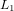

Section: Visualization Toolkit Graphics Classes
Another advantage this filter provides over vtkThreshold is the ability to threshold on non-scalar (i.e., vector, tensor, etc.) attributes without first computing an array containing some norm of the desired attribute. 
This filter makes a distinction between intermediate subsets and subsets that will be output to a grid. Each intermediate subset you create with AddIntervalSet or AddBooleanSet is given a unique integer identifier (via the return values of these member functions). If you wish for a given set to be output, you must call OutputSet and pass it one of these identifiers. The return of OutputSet is the integer index of the output set in the multiblock dataset created by this filter.
For example, if an input mesh defined three attributes T, P, and s, one might wish to find cells that satisfy "T < 320 [K] && ( P > 101 [kPa] || s < 0.1 [kJ/kg/K] )". To accomplish this with a vtkMultiThreshold filter, <pre> vtkMultiThreshold* thr; int intervalSets[3];
intervalSets[0] = thr->AddIntervalSet( vtkMath::NegInf(), 320., vtkMultiThreshold::CLOSED, vtkMultiThreshold::OPEN, vtkDataObject::FIELD_ASSOCIATION_POINTS, "T", 0, 1 ); intervalSets[1] = thr->AddIntervalSet( 101., vtkMath::Inf(), vtkMultiThreshold::OPEN, vtkMultiThreshold::CLOSED, vtkDataObject::FIELD_ASSOCIATION_CELLS, "P", 0, 1 ); intervalSets[2] = thr->AddIntervalSet( vtkMath::NegInf(), 0.1, vtkMultiThreshold::CLOSED, vtkMultiThreshold::OPEN, vtkDataObject::FIELD_ASSOCIATION_POINTS, "s", 0, 1 );
int intermediate = thr->AddBooleanSet( vtkMultiThreshold::OR, 2, &intervalSets[1] );
int intersection[2]; intersection[0] = intervalSets[0]; intersection[1] = intermediate; int outputSet = thr->AddBooleanSet( vtkMultiThreshold::AND, 2, intersection );
int outputGridIndex = thr->OutputSet( outputSet ); thr->Update(); </pre> The result of this filter will be a multiblock dataset that contains a single child with the desired cells. If we had also called <code>thr->OutputSet( intervalSets[0] );</code>, there would be two child meshes and one would contain all cells with T < 320 [K]. In that case, the output can be represented by this graph \dot digraph MultiThreshold { set0 [shape=rect,style=filled,label="point T(0) in [-Inf,320["] set1 [shape=rect,label="cell P(0) in ]101,Inf]"] set2 [shape=rect,label="point s(0) in [-Inf,0.1["] set3 [shape=rect,label="OR"] set4 [shape=rect,style=filled,label="AND"] set0 -> set4 set1 -> set3 set2 -> set3 set3 -> set4 } \enddot The filled rectangles represent sets that are output.
To create an instance of class vtkMultiThreshold, simply invoke its constructor as follows
obj = vtkMultiThreshold
obj is an instance of the vtkMultiThreshold class.
string = obj.GetClassName ()
int = obj.IsA (string name)
vtkMultiThreshold = obj.NewInstance ()
vtkMultiThreshold = obj.SafeDownCast (vtkObject o)
int = obj.AddLowpassIntervalSet (double xmax, int assoc, string arrayName, int component, int allScalars) - These convenience members make it easy to insert closed intervals.
The "notch" interval is accomplished by creating a bandpass interval and applying a NAND operation.
In this case, the set ID returned in the NAND operation set ID.
Note that you can pass xmin == xmax when creating a bandpass threshold to retrieve elements matching exactly
one value (since the intervals created by these routines are closed).
int = obj.AddHighpassIntervalSet (double xmin, int assoc, string arrayName, int component, int allScalars) - These convenience members make it easy to insert closed intervals.
The "notch" interval is accomplished by creating a bandpass interval and applying a NAND operation.
In this case, the set ID returned in the NAND operation set ID.
Note that you can pass xmin == xmax when creating a bandpass threshold to retrieve elements matching exactly
one value (since the intervals created by these routines are closed).
int = obj.AddBandpassIntervalSet (double xmin, double xmax, int assoc, string arrayName, int component, int allScalars) - These convenience members make it easy to insert closed intervals.
The "notch" interval is accomplished by creating a bandpass interval and applying a NAND operation.
In this case, the set ID returned in the NAND operation set ID.
Note that you can pass xmin == xmax when creating a bandpass threshold to retrieve elements matching exactly
one value (since the intervals created by these routines are closed).
int = obj.AddNotchIntervalSet (double xlo, double xhi, int assoc, string arrayName, int component, int allScalars) - These convenience members make it easy to insert closed intervals.
The "notch" interval is accomplished by creating a bandpass interval and applying a NAND operation.
In this case, the set ID returned in the NAND operation set ID.
Note that you can pass xmin == xmax when creating a bandpass threshold to retrieve elements matching exactly
one value (since the intervals created by these routines are closed).
int = obj.AddBooleanSet (int operation, int numInputs, int inputs) - Create a new mesh subset using boolean operations on pre-existing sets.
int = obj.OutputSet (int setId) - Create an output mesh containing a boolean or interval subset of the input mesh.
obj.Reset () - Remove all the intervals currently defined.